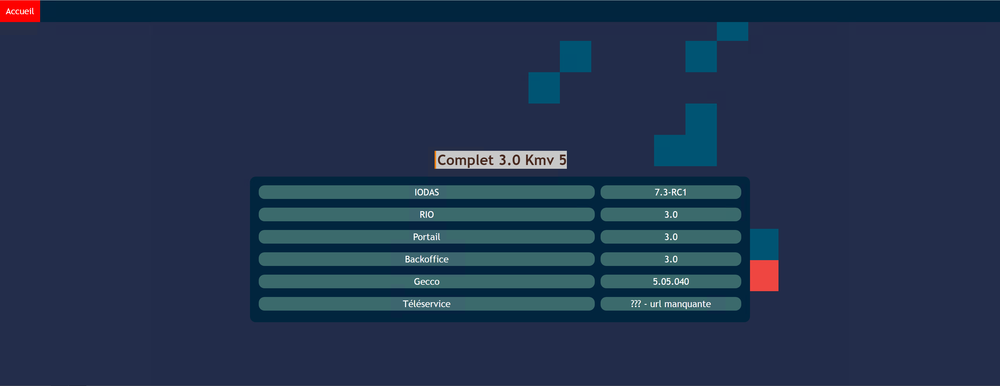
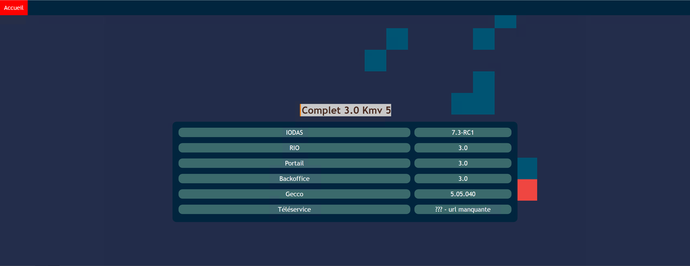
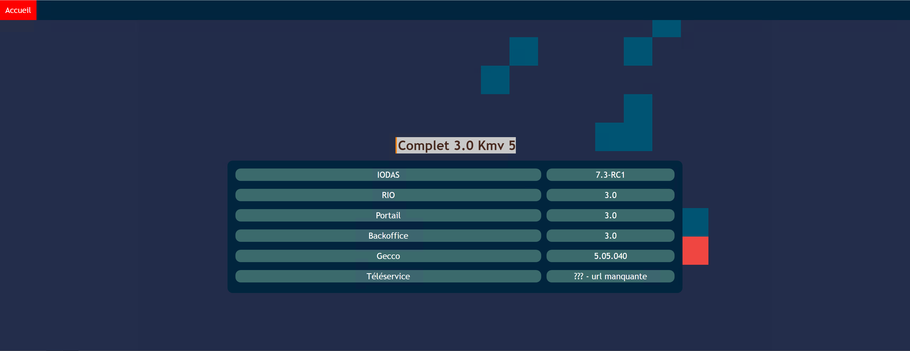

Mon projet
J'ai créé une page web réunissant les applications à tester selon leur environnement.
 

J'ai eu pour mission un objectif à réaliser sous forme de projet pour lequel j'avais carte blanche sur la façon d'ont je le faisais. Cependant je devais faire un rapport toutes les semaines pour vérifier l'avancement du projet.
J'ai créé une page web réunissant les applications à tester selon leur environnement.

Ce stage a été très enrichissant car j'ai découvert le travail et le monde de l'entreprise. De plus, j'ai eu la chance de faire un projet avec ma vision des choses et une liberté presque totale.